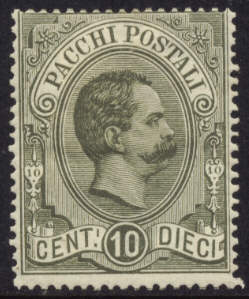
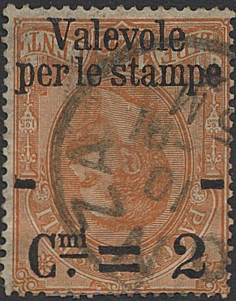

{kind=link}



Note: on my website many of the
pictures can not be seen! They are of course present in the
catalogue;
contact me if you want to purchase the catalogue.
10 c green 20 c blue 50 c red 75 c green 1,25 L orange 1,75 L brown

Backside of a 50 c stamp showing the 'Crown' watermark
These stamps have watermark 'Crown' and perforation 14.
Value of the stamps |
|||
vc = very common c = common * = not so common ** = uncommon |
*** = very uncommon R = rare RR = very rare RRR = extremely rare |
||
| Value | Unused | Used | Remarks |
| 10 c | *** | *** | |
| 20 c | R | R | |
| 50 c | * | * | |
| 75 c | * | * | |
| 1.25 L | ** | ** | |
| 1.75 L | ** | *** | |
Postal stationery in the same design exists, at leat the following values are known to me: 25 c brown on brown, 50 c brown, 75 c brown on red, 1.25 L brown on green, 1.75 L brown on yellow and 2.70 L brown on grey.


2 c on 10 c green 2 c on 20 c blue 2 c on 50 c red 2 c on 75 c green 2 c on 1,25 L orange 2 c on 1,75 L brown
Value of the stamps |
|||
vc = very common c = common * = not so common ** = uncommon |
*** = very uncommon R = rare RR = very rare RRR = extremely rare |
||
| Value | Unused | Used | Remarks |
| 2 c on 10 c | c | c | |
| 2 c on 20 c | * | * | |
| 2 c on 50 c | *** | * | |
| 2 c on 75 c | * | * | |
| 2 c on 1.25 L | ** | ** | |
| 2 c on 1.75 L | * | ** | |

This is most likely a forged inverted overprint.
Fournier forged overprints, image taken from a 'Fournier Album of
Philatelic Forgeries' (reduced size)

5 c brown 10 c blue 20 c black 25 c red 50 c orange 1 L violet 2 L green 3 L yellow 4 L black 10 L lilac (1922) 12 L brown (1922) 15 L grey (1922) 20 L lilac (1922) Surcharged '30 CENT. 30' on 5 c brown (1923) '60 CENT. 60' on 5 c brown 'LIRE 1,50 LIRE 1,50' on 5 c brown (1923) 'LIRE 3 LIRE 3' on 10 L lilac (1925)
These stamps consist of two parts, one with inscription 'Sul Bollettino' (for the parcel) and the other 'Sulla Ricevuta' (for the receipt). In cancelled condition these two parts are always separated. Initially 13 values were issued from 5 c to 20 L. Due to the appearance of postal forgeries of the values 3 L and 4 L, these two values were withdrawn and the remainders destroyed.


Here two unsevered stamps with 'LIBIA', 'SOMALIA ITALIANA' and
'SOMALIA' overprint, issued for Libya and Somalia. A similar
overprint exist 'OLTRE GIUBA'
Later more stamps were issued, also in similar designs, but with axes between the stamps instead of the cords.

With 'ERITREA' overprint to be used in Eritrea
5 c brown 10 c blue 25 c red (1932?) 30 c blue 50 c yellow (1932?) 60 c red 1 L violet (1931) 2 L green (1932?) 3 L light brown 4 L grey 10 L lilac (1934) 20 L lilac (1932?)
Overprinted 'REP.SOC.ITALIANA' on the left part and an axe on the
right part
These stamps also exist with 'REP.SOC. ITALIANA' overprint on the left hand stamp and an axe on the right hand side stamp (issued for the socialist republic in 1944 on the stamps with axes). The following values exist: 5 c brown, 10 c blue, 25 c red, 30 c blue, 50 c yellow, 60 c red, 1 L violet, 2 L green, 3 L yellow, 4 L grey, 10 L lilac, 20 L lilac.
Without any symbols between the stamps
These stamps also exist without any symbols in between the stamps (1946). I've seen the value 1 L violet, 2 L green, 3 L yellow, 4 L green, 10 L lilac and 20 L brown.
With overprint 'ERITREA' to be used in Eritrea


With overprint 'SOMALIA ITALIANA', issued for Somalia
Some of these stamps also exist with overprint 'LIBIA'.
25 c blue 50 c brown 1 L olive 2 L light blue 3 L orange 4 L grey 5 L lilac 10 L violet 20 L brown 30 L lilac 40 L grey 50 L red 60 L lilac 100 L blue 140 L red 150 L brown 200 L green 280 L yellow 300 L brown 400 L black 500 L olive 600 L olive 700 L blue 800 L orange 1000 L blue (with jumping horse) 2000 L brown and red (with jumping horse)
I've seen several values with overprint 'A.M.G. F.T.T.' in two lines or 'AMG FTT' in a single line for use in Trieste (Zone A).

40 L black 40 L orange 50 L blue 60 L violet 70 L green 75 L olive 80 L brown 90 L lilac 110 L lilac 110 L yellow 120 L green 140 L black 180 L red 240 L blue
Some values exist with overprinted 'AMG-FTT', issued for Trieste.

{kind=link}